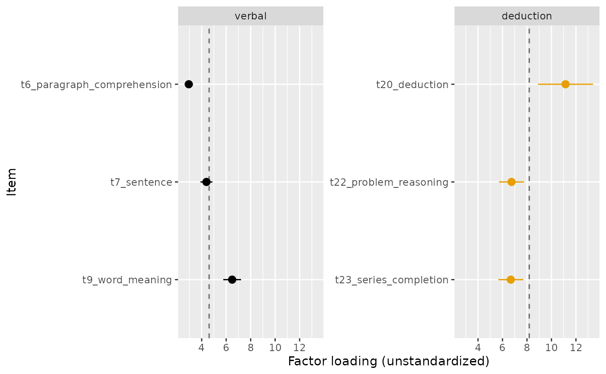
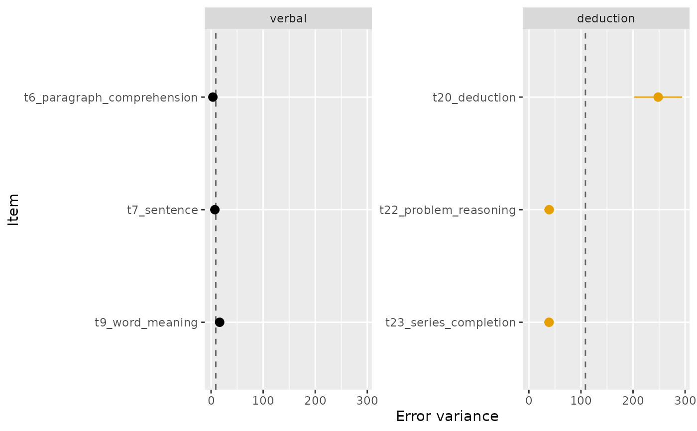
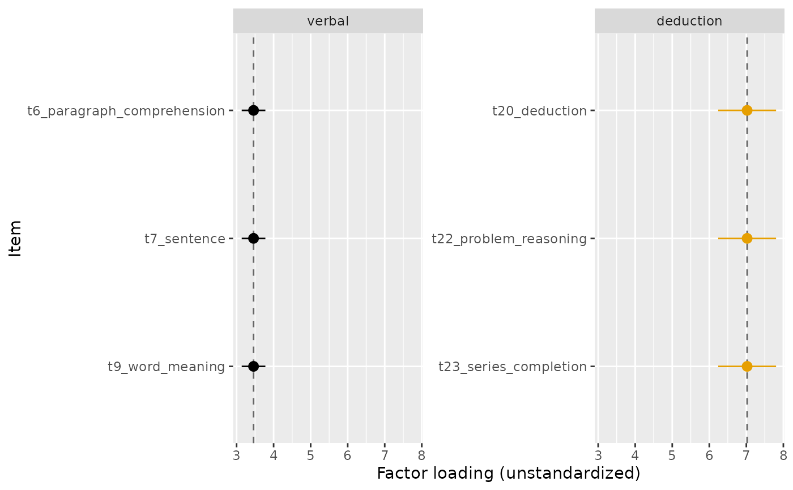

Displays the item-level estimates of a cfa_k fit, one
panel per factor, with each estimate's confidence interval. The
display is built to make the equality questions behind the classical
measurement structures visible: a dashed vertical line marks, per
factor, either the common (equated) estimate when the plotted
parameter was constrained equal, or the mean of the free estimates as
an informal anchor for the question "could these plausibly be one
value?". Confidence intervals that all cover the anchor are what
equal loadings (or equal error variances, or equal intercepts) would
look like; an interval far from it shows which item resists the
constraint, and the likelihood ratio test of the two nested
cfa_k() fits is the formal companion (see the examples in
cfa_k).
Usage
plot_cfa_k(
x,
what = c("loadings", "errors", "intercepts"),
show_equal_reference = TRUE,
xlab = NULL,
title = NULL,
palette = "okabe_ito"
)Arguments
- x
A
dmar_cfa_kobject fromcfa_kwith the defaultoutput = "verbose".- what
Which parameter to display:
"loadings"(default, thelambdaterms),"errors"(thepsiterms), or"intercepts"(thenuterms; requires a fit with the mean structure).- show_equal_reference
Logical. If
TRUE(default), draw the dashed per-factor reference line described above. When the parameter was constrained equal the line is the common estimate and is always drawn.- xlab
Label for the horizontal axis. Defaults to a description of the plotted parameter.
- title
Optional plot title.
- palette
Character string naming the color palette. Defaults to
"okabe_ito", base R's colorblind-safe Okabe-Ito palette;"tableau"is also available.
See also
cfa_k for the fit; plot_ci for
the general forest-style confidence interval display.
Other plotting:
plot_R2(),
plot_ci(),
plot_equivalence(),
plot_irt_information(),
plot_mediation_mbco(),
plot_regions_of_significance(),
plot_smd(),
plot_trajectories(),
plot_trajectories_fitted(),
power_equivalence_md_plot()
Author
Ken Kelley kkelley@nd.edu
Examples
# \donttest{
data(holzinger_swineford)
hs_factors <- list(
verbal = c("t6_paragraph_comprehension",
"t7_sentence", "t9_word_meaning"),
deduction = c("t20_deduction", "t22_problem_reasoning",
"t23_series_completion"))
res <- cfa_k(holzinger_swineford, hs_factors)
# Are equal loadings plausible? Compare each interval with the anchor.
plot_cfa_k(res)

# The same question for the error variances (the additional
# constraint that separates essentially parallel from essentially
# tau-equivalent).
plot_cfa_k(res, what = "errors")

# After imposing the constraint, the display shows the equated value.
res_equal <- cfa_k(holzinger_swineford, hs_factors,
equal_loading = TRUE)
plot_cfa_k(res_equal)

# }